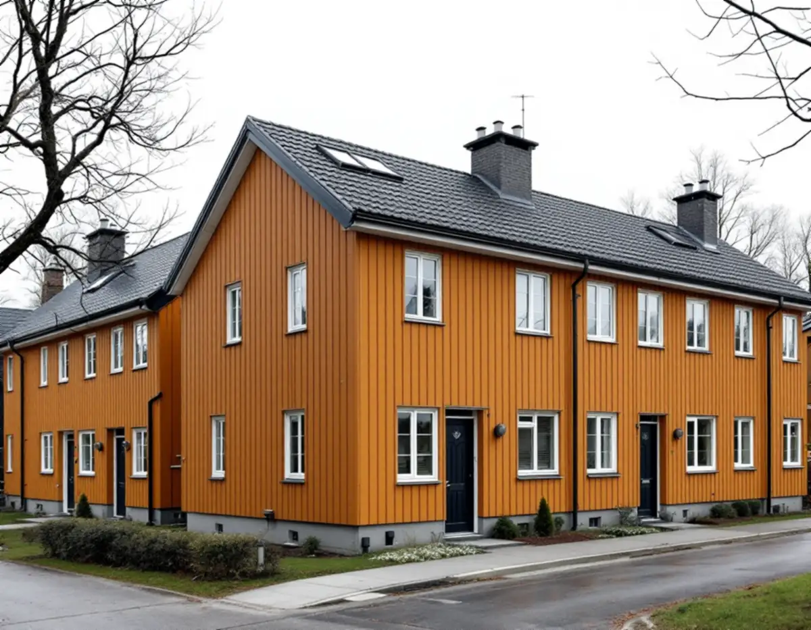
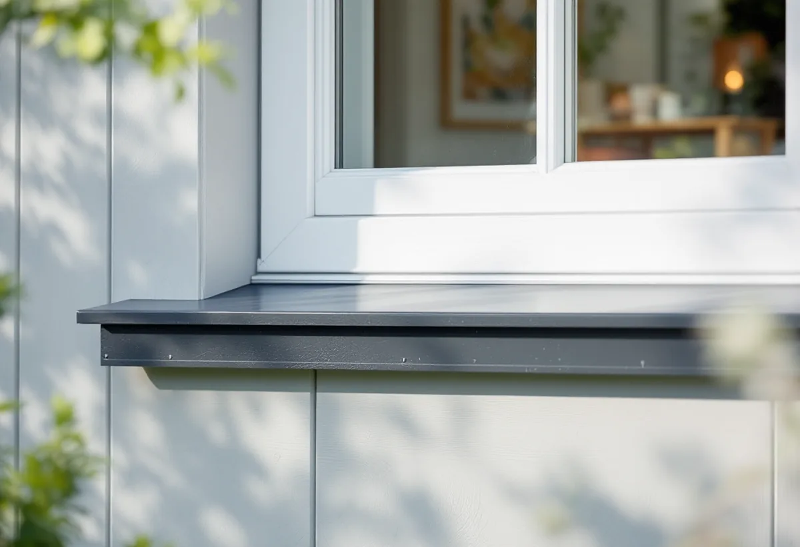

Besök
Vi tittar på takfot, rännor, bleck och skarvar och, i ett radhus, på hur plåten ansluter mot grannarna.
I ett radhus delar grannarna takfot, ränna och nockplåt, och på en villa som tilläggsisoleras flyttas plötsligt både fönsterbleck och vindskivor. Det är två vanliga skäl att ta in en plåtslagare. Geal Entreprenad AB har egna plåtslagare som arbetar i Tureberg, Edsberg, Rotebro, Häggvik och övriga Sollentuna, med gratis platsbesök och skriftligt kostnadsförslag.

Sollentuna kommun skriver att det oftast inte krävs bygglov för en fasadändring på ett en- eller tvåbostadshus, och räknar dit byte av kulör, fasadbeklädnad och taktäckningsmaterial. För radhus, kedjehus och andra sammanbyggda småhus gäller däremot olika möjligheter att ändra fasaden utan lov beroende på hur bebyggelsen är utformad, och kommunen ber dig kontakta kontaktcenter för vägledning.
För plåten på ett radhus är det just sammanbyggnaden som ställer till det. Fotplåten och hängrännan löper ofta över flera hus, och nockplåten och vindskivorna ska se likadana ut längs hela längan. Byter ett hus till en annan profil eller kulör syns det tydligt, och en ränna som skarvas mot grannens måste ha samma fall så att vattnet inte blir stående i skarven.
Kommunen påpekar att vissa detaljplaner har bestämmelser om hur fasad- och takmaterial ska vara utförda. Planerar flera grannar att byta plåt kan det löna sig att samordna och göra hela längan i samma etapp.

Kommunen skriver att en tilläggsisolering kan räknas som en fasadändring eftersom den kan ändra husets yttre utseende. Boverkets energiguide beskriver vad som händer: fönster och dörrar hamnar längre in i fasaden, takfoten skjuter inte ut lika mycket som tidigare och fasaden kan hänga ut över sockeln. För att behålla proportionerna kan fönster behöva flyttas ut och sockel och takfot byggas på.
Varje sådan ändring är ett plåtjobb. Fönsterblecken måste bli djupare eller göras om när fönstret flyttas ut, vindskivor och fotplåt måste förlängas när takfoten byggs på och en sockelplåt kan behövas där väggen blir tjockare än grunden. Boverket nämner också att vind- och slagregnsutsatta detaljer som fönster och dörrar kan behöva en extra fuktsäker utformning.
Vi samordnar gärna plåten med fasadarbetet, se fasadrenovering i Sollentuna, så att blecken mäts upp mot den nya väggen och inte mot den gamla.
Sollentunas dagvattenpolicy antogs av kommunfullmäktige 2016 och är framtagen inom Oxunda Vattensamverkan, ett samarbete mellan Järfälla, Sigtuna, Sollentuna, Vallentuna, Täby och Upplands Väsby. Den gäller hela kommunen, även Edsvikens avrinningsområde. Policyn säger att förorening av dagvatten ska begränsas vid källan genom goda materialval och lokala lösningar, och att särskild hänsyn behöver tas till Mälaren som är dricksvattentäkt.
Kommunens tekniska handbok för dagvatten pekar ut tät bebyggelse där en betydande andel hus har förzinkade byggnadsmaterial eller material som innehåller koppar som en områdestyp där rening av dagvattnet bör övervägas.
För en villaägare är det ett skäl att fundera på materialet när rännor, stuprör eller beslag ska bytas. Vi går igenom vilka plåtmaterial och ytbehandlingar som finns och vad de innebär för husets utseende.
Bygglov krävs för en fasadändring om fastigheten ligger inom ett kulturhistoriskt värdefullt område eller om byggnaden i sig är kulturhistoriskt värdefull. För att avgöra det ber kommunen om foton på fastigheten från samtliga väderstreck tillsammans med en beskrivning av åtgärden, och återkommer sedan med en bedömning.
För åtgärder som inte kräver lov går det att söka frivilligt bygglov för att få ett beslut på att det planerade arbetet uppfyller lagens krav. Kommunen påminner om att du som byggherre ansvarar för att reglerna följs även när inget lov behövs. För byte av själva taket, se takbyte i Sollentuna.
Vi tittar på takfot, rännor, bleck och skarvar och, i ett radhus, på hur plåten ansluter mot grannarna.
Vi kontrollerar om planen har bestämmelser om takmaterial och om huset kan ligga i ett värdefullt område.
Ska fasaden isoleras planeras plåten efter de nya måtten.
Varje del prissätts för sig, och i en radhuslänga kan förslaget delas upp per hus.
Plåten monteras med samma profil och kulör som längan i övrigt och med rätt fall i skarvarna.
Vi visar arbetet och hur rännan leder vattnet förbi grannens del.
Skatteverket godkänner rotavdrag för att reparera, rengöra eller byta ut plåttak, hängrännor och stuprör på ett småhus, och ett radhus räknas som småhus. Bor du i en bostadsrätt ger samma arbete inte rotavdrag.
Avdraget är högst 30 procent av arbetskostnaden och högst 50 000 kr per person och år, inom ett gemensamt tak på 75 000 kr för rot och rut. Geal drar avdraget direkt på fakturan.
Längden på takfot och rännor, antalet fönsterbleck som ska göras om vid en isolering, om flera hus i en länga görs samtidigt och vilken ställning som behövs. Du får ett skriftligt kostnadsförslag efter ett gratis platsbesök.
Plåttak, hängrännor och beslag.
Plåtslagare i Stockholm →Takbyte, takbesiktning och plåtarbeten.
Takläggare i Sollentuna →Norrviken, Tureberg och Edsberg.
Takrenovering i Sollentuna →Radhus, villa och en extra bostad.
Attefallshus i Sollentuna →Tillbyggnad, tomtdelning och lov.
Byggföretag i Sollentuna →Ny kulör och lov i villastaden.
Fasadmålning i Sollentuna →Buller, ljudglas och radhus i Sollentuna.
Fönsterbyte i Sollentuna →Täta gamla fönster med ventilationen i åtanke.
Fönsterrenovering i Sollentuna →Radhus i Sjöberg och villor nära stationerna.
Golvläggare i Sollentuna →Massivt trä eller lamell – vad går att slipa.
Golvslipning i Sollentuna →Villastad och radhuslängor.
Köksrenovering i Sollentuna →Villastad, radhus och ventilationen.
Badrumsrenovering i Sollentuna →Villor och radhus i Sollentuna.
Fasadrenovering i Sollentuna →Villor och radhus i Sollentuna.
Målare i Sollentuna →Altaner, uterum och bryggor.
Snickare i Sollentuna →Ansökan, solceller och radhus.
Takbyte i Sollentuna →Ny tapet efter prov av väggen.
Tapetsering i Sollentuna →På höjden, nya byggregler och ritningar.
Tillbyggnad i Sollentuna →Radon med i planen för hela huset.
Totalrenovering i Sollentuna →